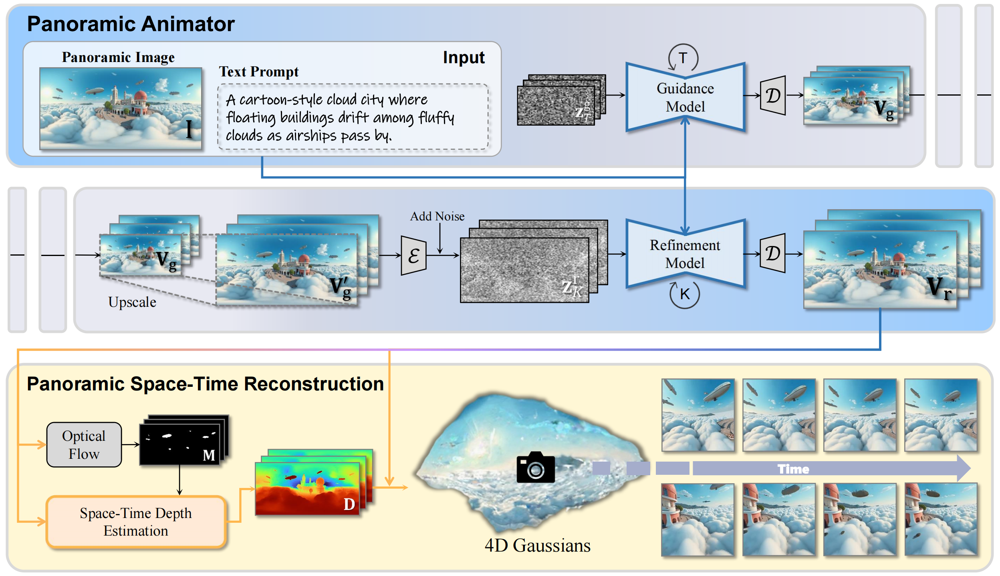

: Taming Video Diffusion Models for Panoramic 4D Scene Generation
1 Peking University, 2 Peng Cheng Laboratory, 3 Harbin Institute of Technology
(* Equal Contribution, ✉ Corresponding Author)
The rapid advancement of diffusion models holds the promise of revolutionizing the application of VR and AR technologies, which typically require scene-level 4D assets for user experience. Nonetheless, existing diffusion models predominantly concentrate on modeling static 3D scenes or object-level dynamics, constraining their capacity to provide truly immersive experiences. background To address this issue, we propose HoloTime, a framework that integrates video diffusion models to generate panoramic videos from a single prompt or reference image, along with a 360-degree 4D scene reconstruction method that seamlessly transforms the generated panoramic video into 4D assets, enabling a fully immersive 4D experience for users. Specifically, to tame video diffusion models for generating high-fidelity panoramic videos, we introduce the 360World dataset, the first comprehensive collection of panoramic videos suitable for downstream 4D scene reconstruction tasks. With this curated dataset, we propose Panoramic Animator, a two-stage image-to-video diffusion model that can convert panoramic images into high-quality panoramic videos. Following this, we present Panoramic Space-Time Reconstruction, which leverages a space-time depth estimation method to transform the generated panoramic videos into 4D point clouds, enabling the optimization of a holistic 4D Gaussian Splatting representation to reconstruct spatially and temporally consistent 4D scenes. To validate the efficacy of our method, we conducted a comparative analysis with existing approaches, revealing its superiority in both panoramic video generation and 4D scene reconstruction. This demonstrates our method's capability to create more engaging and realistic immersive environments, thereby enhancing user experiences in VR and AR applications.
The rapid advancement of diffusion models holds the promise of revolutionizing the application of VR and AR technologies, which typically require scene-level 4D assets for user experience. Nonetheless, existing diffusion models predominantly concentrate on modeling static 3D scenes or object-level dynamics, constraining their capacity to provide truly immersive experiences. background To address this issue, we propose HoloTime, a framework that integrates video diffusion models to generate panoramic videos from a single prompt or reference image, along with a 360-degree 4D scene reconstruction method that seamlessly transforms the generated panoramic video into 4D assets, enabling a fully immersive 4D experience for users. Specifically, to tame video diffusion models for generating high-fidelity panoramic videos, we introduce the 360World dataset, the first comprehensive collection of panoramic videos suitable for downstream 4D scene reconstruction tasks. With this curated dataset, we propose Panoramic Animator, a two-stage image-to-video diffusion model that can convert panoramic images into high-quality panoramic videos. Following this, we present Panoramic Space-Time Reconstruction, which leverages a space-time depth estimation method to transform the generated panoramic videos into 4D point clouds, enabling the optimization of a holistic 4D Gaussian Splatting representation to reconstruct spatially and temporally consistent 4D scenes. To validate the efficacy of our method, we conducted a comparative analysis with existing approaches, revealing its superiority in both panoramic video generation and 4D scene reconstruction. This demonstrates our method's capability to create more engaging and realistic immersive environments, thereby enhancing user experiences in VR and AR applications.
We highly recommend using a mobile phone to access the website(better use Chrome browser) for device motion tracking, enhancing the immersive quality of the VR interactive experience.
NOTE: The Loading may be a little slow, but your wait will be worth it !!!
a city street covered in snow with cherry blossom trees lining the sidewalks.



a white SUV driving down a dirt road in a forested mountain valley
Santa Claus walking through a snowy forest at night
a busy street in London with many people walking down the street
a beautiful beach with crashing waves and a forested cliff in the background
a colorful coral reef with a school of small fish swimming above it
a large fountain in a city square surrounded by many buildings
a monkey sitting in a pool of water
a large polar bear standing on a snow-covered mound in a winter forest
a picturesque canal in Venice, Italy with a gondola gliding through the water
a river winding through a forested valley with the aurora borealis visible in the sky
a snow-covered log cabin in a forest
a traditional French town with half-timbered houses and a cobbled street
@article{tan2024imagine360,
title={Imagine360: Immersive 360 Video Generation from Perspective Anchor},
author={Tan, Jing and Yang, Shuai and Wu, Tong and He, Jingwen and Guo, Yuwei and Liu, Ziwei and Lin, Dahua},
journal={arXiv preprint arXiv:2412.03552},
year={2024}
}